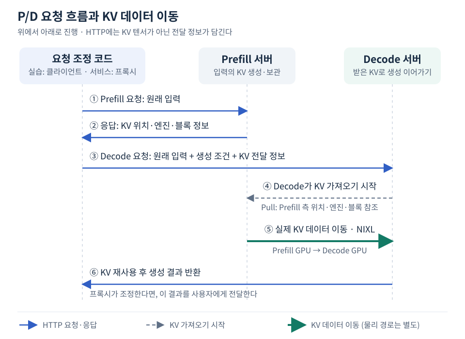

P/D 분리는 Prefill이 만든 KV를 다른 서버가 이용하는 구조다. 하지만 KV만 옮겨 놓는다고 사용자 요청이 자동으로 이어지는 것은 아니다. 클라이언트 또는 프록시가 두 서버의 요청을 연결해야 한다. 이 문서는 vLLM 0.29.0의 NIXL Pull 예제에 맞춘 HTTP 흐름을 설명한다.
KV가 무엇을 담고 왜 원래 입력을 대신할 수 없는지부터 확인하려면 Decode가 이어받는 것은 모델이 아니라 입력의 KV 상태다를 참고한다.
서버를 구분한 다음 요청을 연결한다
예시에서는 Prefill 서버 A의 HTTP 포트가 8100, Decode 서버 B는 8200이다. KV 연결 정보를 교환하는 side channel은 각각 5600, 5601이다. 두 서버 모두 같은 Qwen3-8B 모델 전체를 가지고 TP=1로 실행한다.
서버 시작 시 상대 HTTP 주소를 서로 적어야만 연결되는 구조는 아니다. 요청 조정 코드가 P와 D의 HTTP 목적지를 알고 있으며, P의 응답을 통해 D가 KV 제공 측 연결 정보를 얻게 된다. 구체적인 역할 설정은 vLLM의 KV 역할 옵션은 무엇을 바꾸는가?를 참고한다.
다음 두 상태는 다르다. P/D 프로세스가 떠 있고 /health가 성공하는 것은 서버 준비 확인이다. 새 KV 정보로 D 요청을 완료하고 수신 메트릭이 늘어나는 것이 실제 KV 전달 확인이다. 서버를 띄웠다는 사실만으로 둘 사이에 요청의 KV가 이미 이동했다고 판단하지 않는다.
요청 본문 준비와 측정 전 상태 저장은 실행과 다르다
노트북에서 먼저 만드는 original_body는 앞으로 보낼 요청의 내용이다. 이 JSON을 출력하거나 파일에 저장해도 아직 Prefill 계산이 발생한 것은 아니다. 표시됐다는 사실과 디스크에 저장됐다는 사실도 다르며, 파일 보존은 코드의 저장 동작과 출력 경로로 확인한다.
관찰 예시의 본문은 다음 구조다. 아래 프롬프트는 설명용 축약이며 실제 673토큰 본문은 보존된 요청에 있다.
{
"model": "Qwen/Qwen3-8B",
"prompt": "...원래 입력...",
"temperature": 0,
"max_tokens": 32,
"ignore_eos": true,
"stream": false
}
ignore_eos=true는 이 비교에서 조기 EOS 종료를 무시하도록 둔 조건이다. 출력 길이는 요청 값만 믿지 않고 응답의 completion_tokens=32와 종료 이유 length로 확인했다. 일반 서비스에서 항상 이 설정을 쓰라는 의미는 아니다.
“측정 전 상태”는 D의 누적 메트릭을 미리 읽어 둔 기준값이다. 요청 후 값에서 이 값을 빼야 방금 보낸 요청이 만든 전송 증가량을 구분할 수 있다. KV를 미리 전송한다거나 서버를 초기화한다는 뜻이 아니다.
첫 요청: Prefill에 입력을 계산하고 KV를 제공하도록 한다
원래 입력과 모델을 유지하면서, P용 요청에는 출력 1토큰과 원격 Decode 플래그를 넣는다. 다음은 요청 구성에 필요한 핵심 부분이다.
prefill_body = {
**original_body,
"max_tokens": 1,
"stream": False,
"kv_transfer_params": {
"do_remote_decode": True,
"do_remote_prefill": False,
"remote_engine_id": None,
"remote_block_ids": None,
"remote_host": None,
"remote_port": None,
},
}
prefill_response = post_completion(8100, prefill_body)
Prefill은 입력을 계산하고 KV를 만든다. HTTP 응답에는 생성 결과와 함께 kv_transfer_params가 들어 있다. 관찰된 요청은 입력 673토큰과 P 출력 1토큰이었다.
첫 응답: 실제 KV 대신 위치·엔진·블록 정보를 반환한다
| 응답의 KV 필드 | Decode가 알게 되는 것 |
|---|---|
remote_host, remote_port |
KV 제공 측의 연결 정보 교환 위치 |
remote_engine_id |
그 위치에서 기대하는 제공 엔진의 식별자 |
remote_request_id |
제공 측 요청의 식별자 |
remote_block_ids |
해당 KV 블록 정보; 그룹별 중첩 목록 |
remote_num_tokens |
원격에서 계산한 입력 토큰 수 |
tp_size, dcp_size, pp_size |
제공 측 병렬 구성 정보 |
transfer_mode |
예시에서는 수신 측이 가져오는 pull |
remote_host=127.0.0.1, remote_port=5600은 P 쪽 위치다. 이 값으로 어느 Decode 서버에 HTTP 요청을 보낼지 결정하는 것이 아니다. 그 선택은 요청 조정 코드가 한다. 또한 5600을 KV 본체가 반드시 흘러가는 물리 데이터 경로라고 해석해서도 안 된다.
이 정보는 장기간 재사용할 영구 캐시 키가 아니다. 예시에서는 생성 요청마다 새 P 응답을 받아 바로 D에 넘겼다. 이전 실행의 엔진·요청·블록 정보를 복사해서 다른 입력에 사용하지 않는다.
두 번째 요청: 같은 입력에 KV 전달 정보를 추가한다
decode_body = {
**original_body,
"kv_transfer_params": prefill_response["kv_transfer_params"],
}
decode_response = post_completion(8200, decode_body)
original_body에는 원래 프롬프트와 원하는 출력 길이·temperature·stream 설정 등이 있다. P 요청의 max_tokens=1을 D로 그대로 복사하는 것이 아니라 원래 생성 조건을 사용한다. 이 예시에서는 출력 32토큰이다.
D에도 P에 사용한 입력을 보낸다. 문자열 프롬프트라면 같은 문자열을 보내 D가 토큰화하고, 토큰 ID 목록을 사용하는 길이별 실험이라면 같은 ID 목록을 보낸다. KV와 입력 토큰의 대응이 유지되어야 한다.
입력 재전송은 전체 Prefill 재계산을 뜻하지 않는다. 입력은 요청을 구성하기 위한 정보이고 KV는 그 입력의 계산 결과다. D는 연결 정보로 KV를 가져와 이미 계산된 구간을 재사용한다. KV는 원문·생성 옵션까지 포함한 완전한 요청 객체가 아니다.
공식 예제 역시 원래 요청에 P 응답의 kv_transfer_params를 추가해 D로 보낸다. 이 프로토콜에서는 P가 생성한 첫 토큰을 원래 프롬프트에 임의로 붙이지 않으며, 보존한 스트리밍 측정도 D의 첫 내용을 사용자 첫 응답으로 삼았다. 다른 P/D 프로토콜의 첫 토큰 전달 방식까지 같다고 일반화하지 않는다. vLLM 공식 프록시 예제
서비스에서는 프록시가 두 요청을 대신한다
사용자는 프록시에 입력과 생성 조건을 한 번 보낸다. 프록시가 아래 그림의 요청 조정 코드 역할을 맡고, 마지막 생성 결과를 사용자에게 돌려준다.

프록시는 순서와 목적지를 조정한다. 실제 KV 텐서를 HTTP 응답으로 받아 다시 업로드하는 중계기가 아니다. 노트북에서는 별도 운영 프록시를 배포하지 않고 Python 함수가 이 순서를 대신 수행했다.
HTTP 200만으로 원격 KV 사용을 확정하지 않으며, NIXL 통계와 HTTP 시간의 경계에 설명한 전후 증가량을 함께 확인한다. 메타데이터가 잘못됐을 때는 KV 전달 실패와 이후 요청의 경계처럼 요청 자체가 실패할 수도 있다.